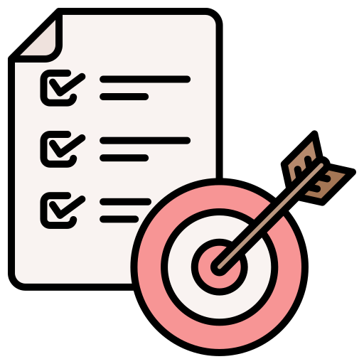

Welcome to my Page!
I created this page with the aim of obtaining a nano degree in front-end development. I chose to utilize this website as an opportunity to showcase my skills and also my portfolio.
OBJECTIVE
An ambitious developer looking for an organization that fosters a culture of creativity, teamwork, and
continuous learning. Committed to personal and professional growth, I aim to contribute my skills and
experience to advance my career in development while providing solutions.

EDUCATION
Bachelor’s degree from Taif University in Computer Science graduate in 2022 GPA of 3.70 out of 4

WORK EXPERIENC
General System Analyst in Al-Bilad Arabia Co. Ltd. “contractor with Aramco” (Aug 2022- present).
- COI-Audit project: I developed website pages using Angular, which includes (TypeScript, HTML,
and CSS). Additionally, I connected the APIs from the backend to these website pages, resulting
in a dynamic website that is customized to meet the specific needs of the users.
- My-security project: Conduct website tests, discover bugs and vulnerabilities, delivering bugs
reports and providing enhancement suggestions.